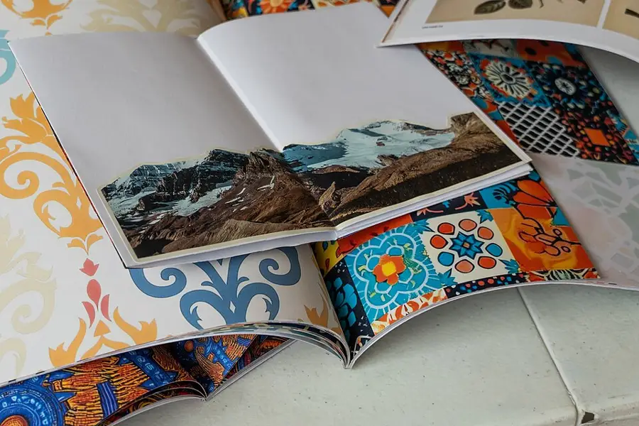

One-Sheet Zine Workshop
Eight pages from a single folded sheet: teens plan, sequence, letter and trade a finished zine, a whole publication with no editor but its maker.
Ages 13–1440–55 min4 materials
- Ages
- 13–14
- Group
- 2–24 kids
- Time
- 40–55 min
- Where
- Indoors
- Prep
- Some prep needed

Setup
Fold the demonstrator yourself, entire, before the session, and then fold a second one badly on purpose, pages out of order, one page upside down, because the workshop's two classic failures are sequence and orientation, and you will teach both from evidence if you have the evidence in your bag. Plan the session's shape now: fold taught, pages planned on a thumbnail map, making in quiet, trading at the end, and defend the planning stage against the room's impatience in advance. A zine planned on its map can be lettered in one pass, while a zine improvised page by page discovers its own ending on page six and has nowhere honest to go. Choose the session's theme or its freedom and state it in the framing: a themed workshop (the zine of one true thing, the field guide to our corridor, eight pages about a sound) gives uncertain makers a floor to stand on; an open workshop trusts makers who arrive with pages already in their heads. Either way, the law that does not move is the zine's own: eight pages, one sheet, finished and traded.
Materials
- one large sheet of plain paper per maker, plus spares for the folding casualties (the zine's whole body: a single sheet, folded and cut once, becomes eight pages. Paper sturdy enough to take lettering on both sides without bleeding through is the one quality that matters)
- pens that letter honestly (fine markers or drawing pens, one dark ink per maker at least. A zine is read at hand's length, and its lettering is its typography, so the pens are chosen for the page size, not for decoration)
- the folding demonstrator (one sheet the adult folds, cuts and refolds in front of the room, slowly, twice. The fold is the zine's only machinery and it is taught until every maker can do it with their eyes on their own hands)
- the trade table and the workshop slate (finished zines are laid title-up for the trading round, and the slate records the workshop's titles and makers. The session's catalogue, kept by the workshop's keeper)
Steps
- The framing, one blank sheet on every table: 'Eight pages, one sheet, no editor but the maker. This sheet is a whole publication folded into a single skin: cover, six pages of inside, back cover, every copy handmade, every copy the original. Zines are the oldest do-it-yourself publishing there is, and their rules are a maker's rules: it must be finished, it must be readable at the distance a hand holds it, and its pages must arrive in the order its reader needs them. Which is why we plan before we letter, on the map, where mistakes are free. Your zine answers to nobody's taste but its own; it answers entirely to its reader's comprehension. Lettering is typography. Sequence is plot. The back page is not where the sheet runs out. It is where the zine decides to end, and a zine that ends on purpose feels finished in a reader's hands in a way no extra page can fake. At the close we trade, title-up, every zine taken seriously by at least one reader who was not its maker. That is publishing: somebody else, reading.' The fold is then taught from the demonstrator, slowly, twice, the room folding along on practice sheets, until every table holds an eight-page blank that opens and turns correctly. The workshop's machinery, mastered before a word is written.
- The mapping stage, ten minutes that the framing has already defended: each maker unfolds their practice sheet flat and draws its ghost on the map card. Eight numbered page boxes in the sheet's true arrangement, cover and back marked, the upside-down pages marked with the map's small arrow, because two of the inside pages live inverted on the flat sheet and every zine ever made has lost one maker's favourite page to that inversion. On the map, and only on the map, the zine is composed: cover title and image, the inside pages' beats in order, what opens, what builds, what the middle spread does, how the last inside page hands the reader to the back, and the back page's decision: a colophon with the maker's name and the zine's number, a final image, a message to the finder. Makers who compose fast help the table check maps, because map-checking is the workshop's peer craft: read another maker's plan as its reader will meet it, pages turning, and say whether the sequence lands. No lettering begins until its map has survived one other reader's eyes.
- The making, the workshop's long quiet: makers letter their real sheets from their maps, page by page in the sheet's flat order, turning the sheet as the map directs, and the room's laws are a print-shop's laws. Pens down during another maker's question to the adult, because lettering spoiled by a jogged elbow is the workshop's one unforced error; spares are for true casualties only, claimed without shame and recorded by nobody, since a maker who ruins a sheet at page seven has learned the workshop's hardest lesson at the standard price; and the session's keeper keeps the slate of titles as covers are finished, reading each title aloud as it is entered, because hearing your zine named in the catalogue while your hands are still inky is the exact moment a worksheet becomes a publication. The adult circulates as the shop's master printer: asked for lettering help, sequence rulings, and the occasional steadying hand on a fold, never for content approval, which the framing has already abolished.
- The trading round, run as a bookshop, not a swap heap: finished zines are laid title-up on the trade table, makers stand behind the table as its booksellers for the round's first half, answering a browser's question about their zine in one sentence, the bookseller's discipline, and every maker takes at least two zines by other makers, chosen by their covers and titles, to read entire at the table. Reading is the trade's payment and it is made properly: a reader who finishes a zine tells its maker one true thing the zine did, the page that landed, the turn that surprised, the lettering they admired, in the hearing of the table, because a zine traded unread is a courtesy copy, and this workshop deals in readings. Zines may then be kept, re-traded along the table, or signed by their makers for their readers, as the room's customs emerge; the slate's catalogue is read aloud to close the round, every title and maker entire, the way a publisher's list is read. Slowly enough to be a roll of honour, which it is.
- Closing the workshop, the archive copy and the next edition: each maker is invited, invited, not required, to leave one zine for the workshop's archive, the shelf or box where the session's publications live together, catalogued by the slate, borrowable by the room under the archive's one law (a borrowed zine is returned to its page of the catalogue, read, and never annotated). The tell-back is said with the trade table still holding its last unsold titles: 'This morning these were blank sheets, and a blank sheet promises nothing. They are publications now. Folded, planned, lettered, sequenced and read entire by people who did not make them, whose praise you heard and whose copies are going home in their pockets. No editor passed them, no press printed them, and they are finished, which is the whole definition of the form. Eight pages, one sheet, no editor but the maker, and the maker, it turns out, was enough.' Practice sheets are recycled, the archive is shelved by the keeper, and the demonstrator, the adult's own twice-folded sheet. Stays pinned where the next workshop will find the machinery already taught.
Variations
Easier: A four-page version (a short session or a first workshop): the same sheet folded to four pages, cover, two inside, back, with the mapping, the making and the trading entire, because the discipline, not the page count, is the workshop.
Harder: A themed-anthology version (a confident second workshop): every maker works the session's single theme, the trade table becomes an anthology reading, and the archive holds the set entire under one catalogue heading, eight views of one subject, bound by a table.
⚠️ Safety
The zine's one blade is the fold's single cut, and it is governed like the workshop's only machinery: the cut is made with the room's ordinary scissors, one cut per sheet, sheet flat on the table, cut away from the holding hand, and scissors travel closed and point-down or not at all. A maker who wants the cut made for them asks the adult or a neighbour, and the asking is ordinary workshop practice, not a lesser making. Pens are the session's chemistry, such as it is: water-based markers only, lids on between pages because a dried pen at page six is a production failure and a marked sleeve is a laundry failure, and any maker whose skin minds a pen works in the workshop's thin gloves or with the barrier the adult provides, without the matter becoming the table's conversation. Paper edges are the cut's other honesty: a freshly cut sheet can nip a finger like a letter opener, so sheets are handled by their folds during the making, and any cut finger, however small, however bravely reported, is washed and covered before the maker returns to a sheet that other hands will trade. The trade table's law is consent, stated in the framing's spirit and enforced plainly: a zine is read by its maker's leave, traded by its maker's leave, and archived only by its maker's leave.
🤝 Inclusion notes
Zine-making is hand-work at a table, and the workshop is seated entire without that costing any maker a thing: the fold is taught at the tables where makers sit, the demonstrator circulates to each table in turn, and the trade table is brought to browsing height for every reader in the room. Lettering welcomes every hand and every method: pens can be gripped fat or thin, pages can be lettered large where a maker's hand prefers it, a zine of few, big words per page is a recognised and honourable style of the form, and a maker may dictate their text to a scribe at their own table, who letters it verbatim and is credited on the colophon as the zine's letterer, because publishing has always divided conceiving from lettering and honoured both. The mapping stage is the workshop's great leveller: a plan can be drawn, described aloud to a map-checker, or built with the session's page tiles, and a map that another reader can follow is a passed map in any medium. During the trading round, zines can be read aloud by their makers or their booksellers at a browser's request, titles on the slate are read aloud entire as law, and no maker's standing in the catalogue depends on their handwriting's neatness, their reading voice, or their speed, only on the eight pages, finished, which the session's shape gives every maker the time to reach.
⭐ Tried this? Rate it
Your ratings live in this browser only. Nobody else can see them. There are no community ratings here; every star on this card is yours.
Rate this activity, add a note, or write a reflection
✏️ Quick reflection
Optional, saved with your rating, and exported with "📋 Copy my week".
Full activity card,